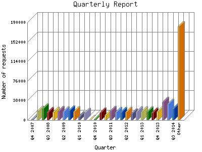

Analog 5.24
Analog 5.24 Report Magic for Analog 2.13
Report Magic for Analog 2.13The Quarterly Report shows total activity on your site for each quarter of a
year. Remember that each page hit can result in several server requests as the
images for each page are loaded.
Note: Most likely, the first and
last quarters will not represent a complete quarter's worth of data, resulting
in lower hits.

| Quarter | Number of requests | Percentage of the requests | |
|---|---|---|---|
| 1. | Q1 2017 | 6,924 | 1.11% |
| 2. | Q4 2016 | 22,114 | 3.57% |
| 3. | Q3 2016 | 17,621 | 2.84% |
| 4. | Q2 2016 | 15,878 | 2.57% |
| 5. | Q1 2016 | 17,703 | 2.86% |
| 6. | Q4 2015 | 16,575 | 2.68% |
| 7. | Q3 2015 | 22,104 | 3.57% |
| 8. | Q2 2015 | 22,485 | 3.62% |
| 9. | Q1 2015 | 19,632 | 3.17% |
| 10. | Q4 2014 | 21,142 | 3.40% |
| 11. | Q3 2014 | 22,272 | 3.60% |
| 12. | Q2 2014 | 31,453 | 5.8% |
| 13. | Q1 2014 | 35,906 | 5.80% |
| 14. | Q4 2013 | 16,436 | 2.66% |
| 15. | Q3 2013 | 15,216 | 2.46% |
| 16. | Q2 2013 | 16,545 | 2.67% |
| 17. | Q1 2013 | 16,976 | 2.73% |
| 18. | Q4 2012 | 16,578 | 2.68% |
| 19. | Q3 2012 | 12,511 | 2.1% |
| 20. | Q2 2012 | 15,816 | 2.56% |
| 21. | Q1 2012 | 15,837 | 2.56% |
| 22. | Q4 2011 | 15,444 | 2.50% |
| 23. | Q3 2011 | 17,386 | 2.80% |
| 24. | Q2 2011 | 9,395 | 1.51% |
| 25. | Q1 2011 | 14,790 | 2.39% |
| 26. | Q4 2010 | 1,603 | 0.26% |
| 27. | Q3 2010 | 0 | 0% |
| 28. | Q2 2010 | 14,047 | 2.27% |
| 29. | Q1 2010 | 6,489 | 1.4% |
| 30. | Q4 2009 | 16,350 | 2.63% |
| 31. | Q3 2009 | 18,220 | 2.93% |
| 32. | Q2 2009 | 17,115 | 2.77% |
| 33. | Q1 2009 | 18,025 | 2.90% |
| 34. | Q4 2008 | 15,905 | 2.57% |
| 35. | Q3 2008 | 15,660 | 2.52% |
| 36. | Q2 2008 | 22,448 | 3.62% |
| 37. | Q1 2008 | 17,807 | 2.88% |
| 38. | Q4 2007 | 1,700 | 0.28% |
Most active quarter Q1 2014 : 35,906 requests handled.
Quarterly average: 16759 requests handled.
This report was generated on January 29, 2017 02:30.
Report time frame December 18, 2007 17:05 to January 29, 2017 05:06.
| Web statistics report produced by: | |
| Analog 5.24 | Report Magic for Analog 2.13 |